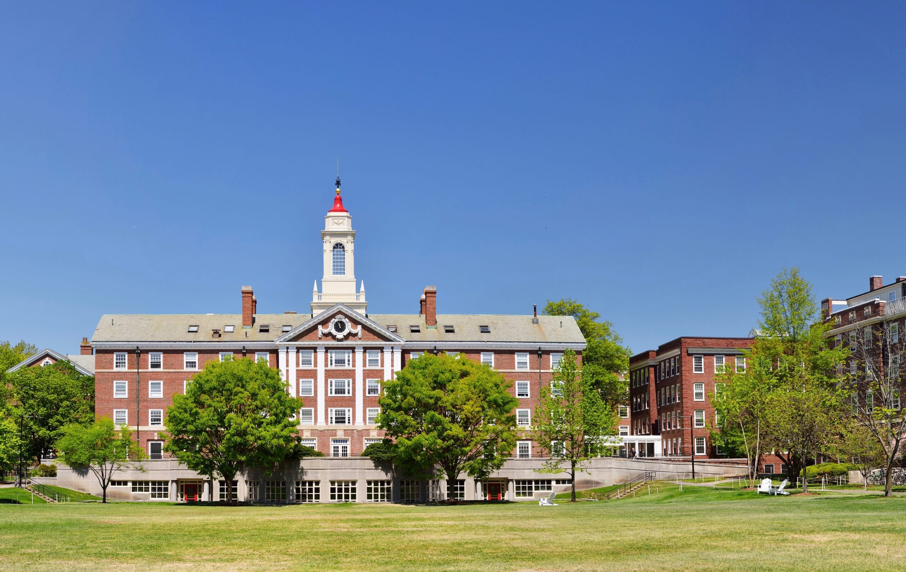
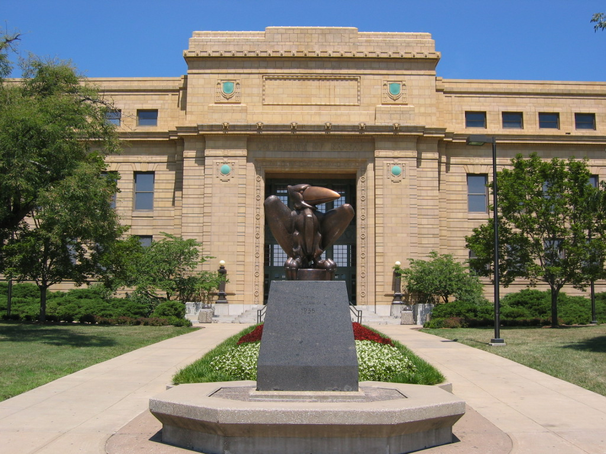

Clic para regresar al menu de escuelas
Descripcion de las escuelas
Clic para ir al apartado de la Universidad Kentucky
Clic para ir al apartado de la Universidad de California
Clic para ir al apartado de la Universidad de Carolina
Clic para ir al apartado de la Universidad Duke
Clic para ir al apartado de la Universidad de Kansas
Universidad Kentucky

La Universidad de Kentucky (University of Kentucky, en inglés), también conocida como UK, es una universidad pública, co-educacional, ubicada en Lexington, Kentucky. Fundada en 1865, es la mayor universidad del estado en número de estudiantes, con 27.171 alumnos.
Kentucky Wildcats (español: Gatos Monteses de Kentucky) es el nombre de los equipos deportivos de la Universidad de Kentucky en Lexington, estado de Kentucky, Estados Unidos. Los equipos de los Wildcats participan en las competiciones universitarias organizadas por la NCAA, y forman parte de la Southeastern Conference. Antiguamente, a los equipos femeninos les conocían como "Lady Kats", pero en 1995 adoptaron el mismo nombre de los masculinos, "Wildcats". El equipo más exitoso es el de baloncesto masculino, que ha ganado el título nacional en ocho ocasiones: 1948, 1949, 1951, 1958, 1978, 1996, 1998 y 2012]. El equipo vencedor de 1996 era conocido como Los Intocables, y estaba liderado por Derek Anderson, Tony Delk, Jeff Sheppard y Antoine Walker entre otros. Dos años después, con varios integrantes de aquel equipo campeón, volvieron a ganar el título ante Utah Utes. Varios jugadores exitosos de la NBA han salido de esta Universidad, entre los que destacan John Wall y los campeones Rajon Rondo, Tayshaun Prince y Nazr Mohammed, campeones con los Boston Celtics, Detroit Pistons y San Antonio Spurs respectivamente. En baloncesto femenino, las Wildcats alcanzaron cuartos de final del campeonato nacional en 1982, 2010, 2012 y 2013. Por su parte, el equipo de fútbol americano fue campeón de conferencia en 1950 y 1976, y tiene una victoria en el Sugar Bowl, una en el Cotton Bowl y una en el Peach Bowl. Entre sus exalumnos destacan George Blanda y Dermontti Dawson, miembros del salón de la fama profesional. Sus rivales históricos son los Louisville Cardinals, también del estado de Kentucky.
Universidad de California

La Universidad de California, Los Ángeles, conocida también por su acrónimo, UCLA, es un campus perteneciente a la Universidad de California (Estados Unidos). Se ubica en el área residencial de Westwood dentro de la ciudad de Los Ángeles. Fundada en 1919, es el tercer campus más antiguo del sistema de la Universidad de California. Ofrece 337 programas de grado y postgrado en un amplio rango de especialidades. Con un cuerpo estudiantil de aproximadamente 29,000 estudiantes de pregrado y 13,000 estudiantes de postgrado, UCLA es la universidad con el mayor número de estudiantes del estado de California y la universidad más popular en términos de solicitudes de admisión en los Estados Unidos con más de 105,000 solicitudes para el curso de otoño de 2014. En 2013, UCLA se convirtió por primera vez en la universidad pública más selectiva de los Estados Unidos, superando a UC Berkeley, con una tasa de aceptación de aproximadamente 2 por cada 10 solicitudes. UCLA tiene un programa académico muy distinguido. El reconocimiento a sus programas académicos ha ido en aumento y actualmente es considerada la mejor universidad pública del mundo, superando a UC Berkeley. A nivel mundial, está posicionada como la universidad número 12 del mundo. De los 36 programas de doctorado examinados por el Consejo de Investigación Nacional en los Estados Unidos (National Reseach Council), UCLA tenía 31 clasificadas en los primeros 10 en términos de calidad total académica, logrando en total el tercer puesto en Estados Unidos. Además, la Biblioteca UCLA, que sostiene más de 8 millones de volúmenes, está entre las 3 mejores de ese país..
UCLA Bruins (en español: Los Oseznos de la UCLA) es el nombre de los equipos deportivos de la Universidad de California en Los Ángeles. Los Bruins, en categoría masculina y femenina, participan en la División I de la NCAA como parte de la Pacific-12 Conference y de la Mountain Pacific Sports Federation (MPSF). El equipo de fútbol americano compite en la subdivisión Football Bowl de la División I de la NCAA. La UCLA es la segunda Universidad que ha ganado más campeonatos de la NCAA, solamente por detrás de la Universidad de Stanford. En 2007, el equipo femenino de waterpolo, dio a la Universidad su centésimo título nacional. UCLA ofrece 11 programas de deportes masculinos y 14 programas femeninos. La UCLA dispone de excelentes instalaciones deportivas. El equipo de fútbol americano juega sus encuentros en el Rose Bowl desde 1982, mientras que el de baloncesto y gimnasia lo hace en el Pauley Pavilion, un pabellón con capacidad para 12.829 espectadores que fue inaugurado en 1965. Los equipos de fútbol juegan desde 2018 en el Wallis Annenberg Stadium,7 y el equipo de béisbol lo hace en el estadio Jackie Robinson.
Universidad de Carolina

La Universidad de Carolina del Norte en Chapel Hill, también conocida como UNC por sus siglas en inglés, o simplemente Carolina, es una universidad pública con sede en Chapel Hill, Carolina del Norte, Estados Unidos. Fundada en 1789, la universidad comenzó a matricular estudiantes en 1795, lo que la convierte en una de las tres instituciones que reclaman el título de ser la universidad pública más antigua de Estados Unidos, junto con Georgia y William and Mary. Carolina del Norte es una de las ocho universidades reconocidas como Public Ivy.
North Carolina Tar Heels (español: Talones de alquitrán de Carolina del Norte) es el nombre de los equipos deportivos de la Universidad de Carolina del Norte en Chapel Hill, Carolina del Norte. Su nombre es debido a que a los habitantes del estado de Carolina del Norte se les conoce como "tar heels", y al estado se le apoda Tar Heels State. Los equipos de los Tar Heels participan en las competiciones universitarias organizadas por la NCAA, y forman parte de la Atlantic Coast Conference. Además de 51 campeonatos nacionales en deportes individuales, los Tar Heels han ganado 42 campeonatos nacionales por equipos en cinco deporte diferentes:
Fútbol femenino: 21 (1982, 1983, 1984, 1986, 1987, 1988, 1989, 1990, 1991, 1992, 1993, 1994, 1996, 1997, 1999, 2000, 2003, 2006, 2008, 2009 y 2012).
Fútbol masculino: 2 (2001 y 2011).
Baloncesto masculino: 7 ; 1 Helms Foundation Championships (1924) y 6 NCAA (1957, 1982, 1993, 2005, 2009 y 2017).
Baloncesto femenino: 1 (1994).
Lacrosse masculino: 5 (1981, 1982, 1986, 1991 y 2016).
Lacrosse femenino: 2 (2013 y 2016).
Hockey sobre hierba: 6 (1989, 1995, 1996, 1997, 2007 y 2009).
Deportistas como Michael Jordan, James Worthy, Vince Carter, Rasheed Wallace, Jerry Stackhouse, Mia Hamm, Eddie Pope, Lawrence Taylor, Chris Hanburger y Marion Jones proceden de esta universidad.
Universidad Duke

La Universidad Duke (en inglés: Duke University) es una universidad privada estadounidense, ubicada en Durham, Carolina del Norte. En su edición de 2019, el Times Higher Education situó a Duke en el puesto número siete entre las mejores universidades estadounidenses. La universidad es miembro de la Asociación de Universidades Americanas, una asociación que, desde 1900, reúne a las universidades de investigación de élite en Estados Unidos de América. Se fundó en el año 1838, en la ciudad de Trinity, por metodistas y cuáqueros. Su sede se trasladó a la localidad de Durham, Carolina del Norte en 1892. Su nombre rinde homenaje a Washington Duke, padre de uno de sus primeros benefactores, el multimillonario empresario estadounidense James Buchanan Duke. Duke es reconocida mundialmente por su excelencia académica tanto en formación de pregrado como de postgrado, pero también por el impacto de la investigación desarrollada en sus diversos centros e institutos de investigación. El gasto en investigación de la Universidad Duke en el año 2014 fue de $1,037 millones de USD, el séptimo más grande de la nación. En 2014 Thomson Reuters nombró a 32 profesores la Universidad Duke a su lista de investigadores altamente citados del Instituto para la Información Científica, haciéndola tener el cuarto lugar global en términos de afiliaciones primarias. La universidad también se clasificó como la n.º 5 entre universidades del país que han producido escolares Rhodes, Marshall, Truman, Goldwater, y Udall. Diez premios Nobel y tres ganadores del Premio Turing están afiliados a la Universidad, entre ellos el profesor Robert Lefkowitz, del departamento de Química, quien obtuvo el Premio Nobel de Química en 2012. Los equipos de deportes de la Universidad compiten en la Atlantic Coast Conference y el equipo de baloncesto es reconocido por haber ganado cinco Campeonatos de la División I de Baloncesto Masculino de la NCAA, el más reciente en 2015.
Duke Blue Devils (español: Diablos Azules de Duke) es el nombre de los equipos deportivos de la Universidad Duke en Durham (Carolina del Norte). Compiten en la Atlantic Coast Conference de la División I de la NCAA. El rival histórico de Duke son los Tar Heels de Carolina del Norte, especialmente en baloncesto.
Universidad de Kansass

La Universidad de Kansas es una universidad pública en el estado de Kansas con campus en Lawrence, Kansas City y Overland Park, siendo el campus principal el situado en Lawrence. La universidad fue fundada en 1865 por los ciudadanos de Lawrence bajo la legislación del estado de Kansas. Los equipos de deportes de la universidad son conocidos como los Kansas Jayhawks, y participan en las competiciones universitarias organizadas por la NCAA formando parte de la Big 12 Conference. Esta Universidad es excelente en su academia
Kansas Jayhawks es el nombre de los equipos deportivos de la Universidad de Kansas en Lawrence, Kansas. Los equipos de los Jayhawks participan en las competiciones universitarias organizadas por la NCAA, y forman parte de la Big 12 Conference. Los equipos de Kansas han ganado nueve campeonatos nacionales de la NCAA, que incluye tres en baloncesto masculino, uno en campo a través masculino, tres en atletismo indoor masculino y tres en atletismo masculino.
Origen del apodo: La palabra jayhawk es una mezcla entre dos aves, el arrendajo azul (blue jay) y el halcón (hawk). El nombre tiene su origen justo antes de la Guerra de Secesión, donde un grupo de abolicionistas eran conocidos como los Jayhawkers. Con la admisión de Kansas como estado libre, el término jayhawker se convirtió en sinónimo de habitante de ese estado.